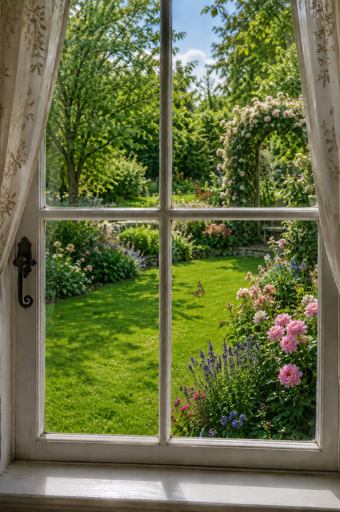

hier - agter die gordyn,
deur tralies en glas,
sien ek die tuin,
met vlinders wat fladder oor beddings tussen vars gesnyde gras
hier - agter die gordyn,
kruip die ego saam't my weg,
asof in die niet verdwyn,
maar hy staan reg, oorgehaal sou iets sy vals bestaan beveg
hier - agter die gordyn,
saam hier op die vensterbank,
dooie vlieë en 'n hommelby,
son gedroog en stil soos kwellings wat eens in my kop weerklank
hier - agter die gordyn,
deur tralies en glas,
roep blou lug in helder sonskyn:
kom uit, kom speel tussen vlinders en blomme op vars gesnyde gras
een, twee, drie,
hier kom ek, reg of nie,
wegkruipertjie is oor en verby -
blok die ego, die tuin roep my